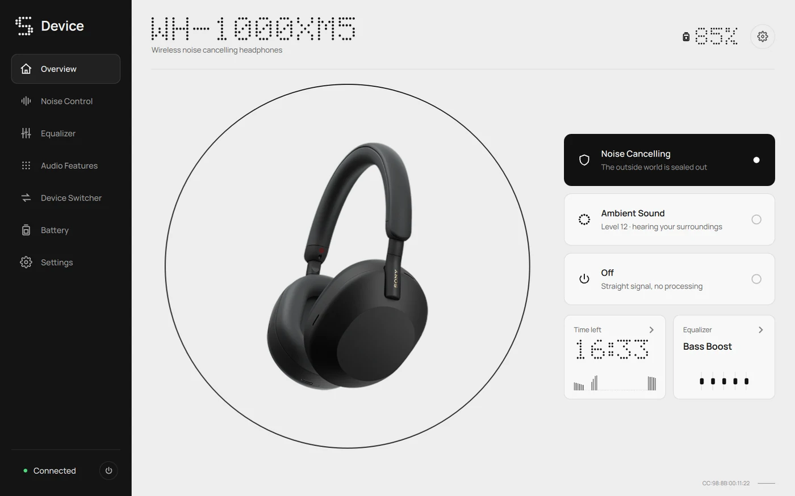

Noise control
Noise cancelling, ambient sound in 20 steps with focus on voice, or neither. One click, and the headset follows.
Noise control, equalizer and battery for WH and WF sets. No phone, no account. Windows, macOS and Linux.
It follows the headset as it changes. Press the button on the ear cup and the app shows it.

Noise cancelling, ambient sound in 20 steps with focus on voice, or neither. One click, and the headset follows.
The presets in the order you know from the phone, five bands and Clear Bass. Save your own curves and share them as a file.
Time left comes from how fast your set actually drains. A day or a week of history, and a notice before it runs out.
Click the tray icon for every paired Bluetooth device and its charge. Global hotkeys switch modes without opening a window.
Tested ones in full ink. The grey ones speak the same protocol and should work, but nobody has confirmed it on real hardware yet.
Tried one of the grey ones? Tell us how it went.
Latest release on GitHub
Prefer to build it yourself? Instructions in the README.